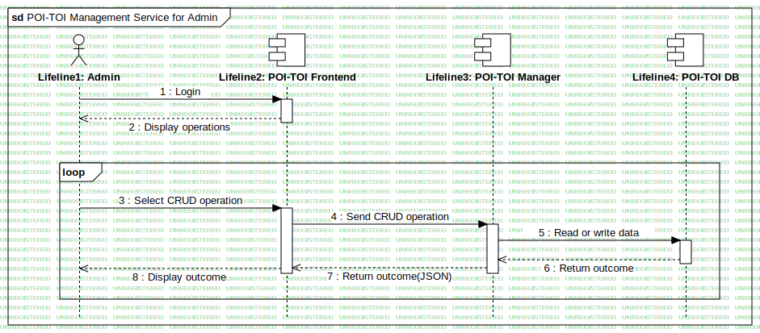

POI-TOI Management Service for Admin
UMLInteraction
RASTA
::
Requirement Analysis
::
OR7 - Itinerari turistici in Umbria
::
Sequence - POI-TOI Management Service for Admin
::
POI-TOI Management Service for Admin
Description
none
Diagrams

POI-TOI Management Service for Admin
Fragments
InteractionUse1
(CombinedFragment)
Participants
Lifeline1: Admin
Lifeline2: TRS GUI
Lifeline3: POI-TOI Manager
Lifeline2: POI-TOI Frontend
Lifeline4: POI-TOI DB
Messages
Login (Lifeline1→Lifeline2)
Display interface (Lifeline2→Lifeline1)
Select CRUD operation (Lifeline1→Lifeline2)
Send CRUD operation (Lifeline2→Lifeline3)
Read or update data (Lifeline3→Lifeline4)
Return outcome (Lifeline4→Lifeline3)
Return outcome (Lifeline3→Lifeline2)
Display outcome (Lifeline2→Lifeline1)
Properties
Name
Value
name
POI-TOI Management Service for Admin
stereotype
null
visibility
public
isReentrant
true
Owned Elements
POI-TOI Management Service for Admin